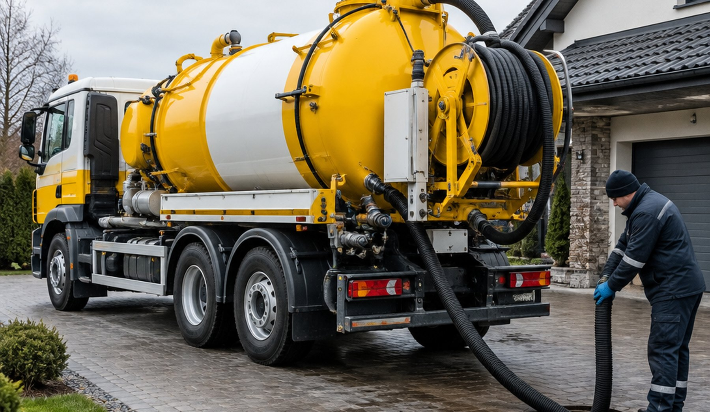
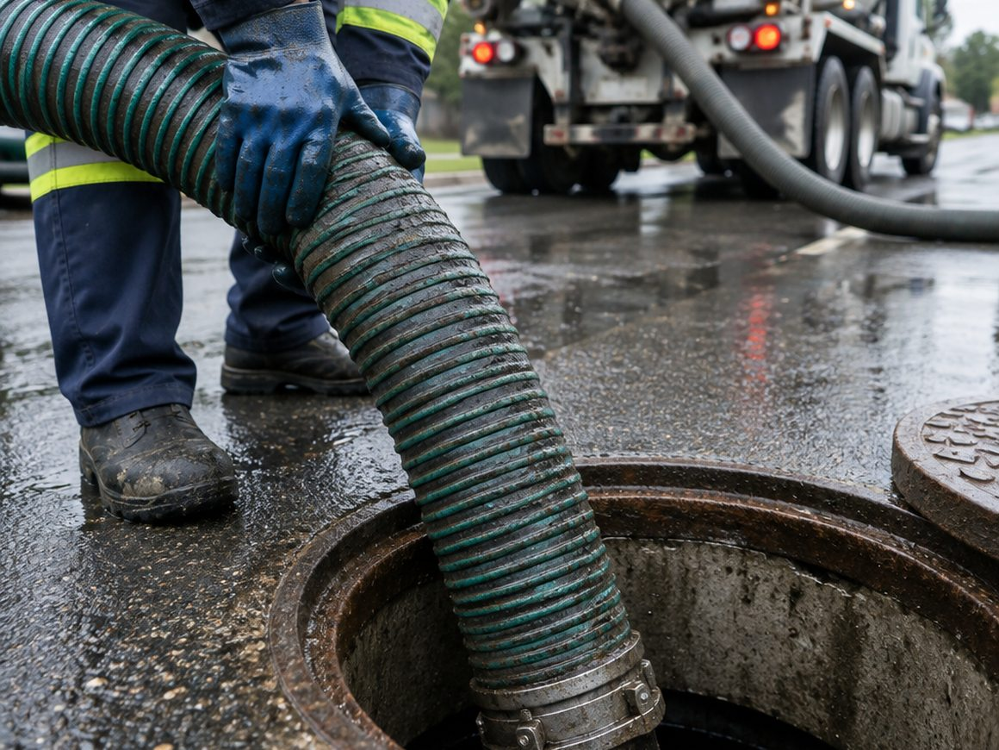

01 · откачка
Канализация и септики
Частные дома, дачи, коттеджи, СНТ: выгребные ямы, септики, биотуалеты, уличные туалеты. Откачиваем полностью, а не «до уровня шланга».
Подробнее
Канализация, септики, выгребные ямы, подвалы после паводка, колодцы и жировые ловушки. Приезжаем со своим оборудованием, достаём шлангом до 50 метров — даже если машина не заедет во двор.
От плановой откачки ямы в частном доме до аварий на предприятиях. Одна машина закрывает и откачку, и промывку.
Частные дома, дачи, коттеджи, СНТ: выгребные ямы, септики, биотуалеты, уличные туалеты. Откачиваем полностью, а не «до уровня шланга».
ПодробнееРазмываем плотные засоры гидродинамической насадкой прямо в процессе откачки: жир, ил, песок, отложения в трубах.
ПодробнееОткачиваем воду после паводка, прорыва или аварии, чистим приямки, кессоны и дренажные колодцы.
ПодробнееПескоуловители, дождеприёмники, дренажные колодцы. Промываем и откачиваем ил после сезона дождей.
ПодробнееКафе, рестораны, автомойки, АЗС, производства: откачка жира, шлама, ила и технических стоков по графику.
ПодробнееВывозим отходы на утилизацию официально: договор, документы для юрлиц, никаких сливов в поле.
Подробнее
Техника, которая действительно вытягивает плотный ил, и цена, которую называют до выезда.
Производительность 5–10 м³/час. Шланг достаёт до ямы или колодца даже при узком подъезде, когда машина не может заехать во двор.
Размываем плотные засоры прямо в процессе откачки: не нужно вызывать вторую бригаду и платить дважды.
Считаем стоимость до выезда, без скрытых доплат на месте. Объём и подъезд уточняем по телефону.
Наличные или безнал для юрлиц. Полная утилизация отходов по договору — экологично и законно.
От звонка до чистой ямы — обычно один выезд.
Уточняем, что случилось, объём и адрес. Сразу называем стоимость.
Приезжаем в согласованное время или срочно при аварии, со своим оборудованием.
Откачиваем и при необходимости размываем засор гидродинамикой.
Вывозим отходы официально. Для организаций — документы по договору.
Частный сектор, дачи и коммерческие объекты по Минску и области.
Ямы, септики, биотуалеты. Работаем в СНТ и коттеджных посёлках, в том числе зимой.
Жировые ловушки, пескоуловители, отстойники. Обслуживание по графику, чтобы не было аварий.
Шламы, ил, технические стоки, ливневые колодцы. Безнал, договор, акты выполненных работ.
Если ответа нет — звоните, проконсультируем бесплатно.
Оставьте заявку: перезвоним, уточним объём и подъезд, назовём стоимость до выезда машины.
Если авария — звоните сразу: +375 (29) 666-10-00. По заявке с сайта отвечаем в рабочее время и уточняем детали, чтобы машина приехала с нужным оборудованием.
Работаем с частными домами, дачами, СНТ и коттеджными посёлками, а также с предприятиями, АЗС и автомойками. Для организаций — безналичный расчёт и полная утилизация отходов по договору.
Не рискуйте санитарной обстановкой. Позвоните — оперативно приедем, откачаем и проконсультируем по профилактике.